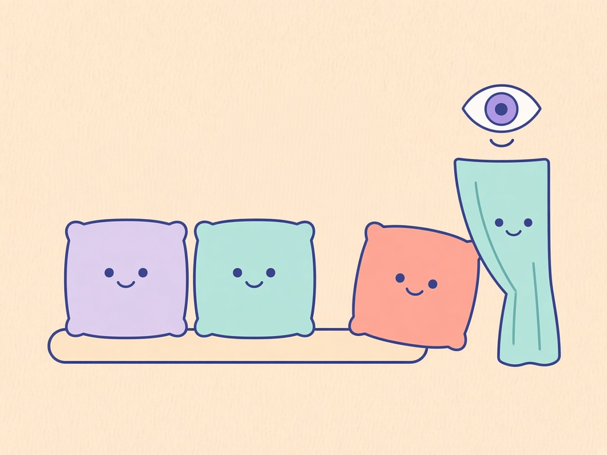
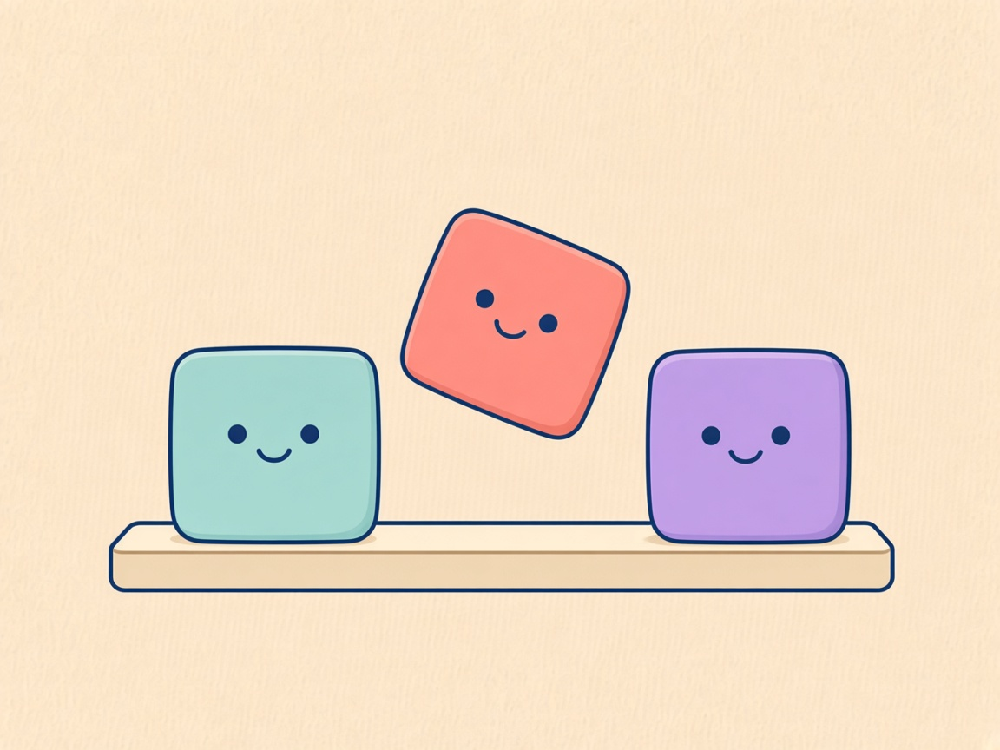
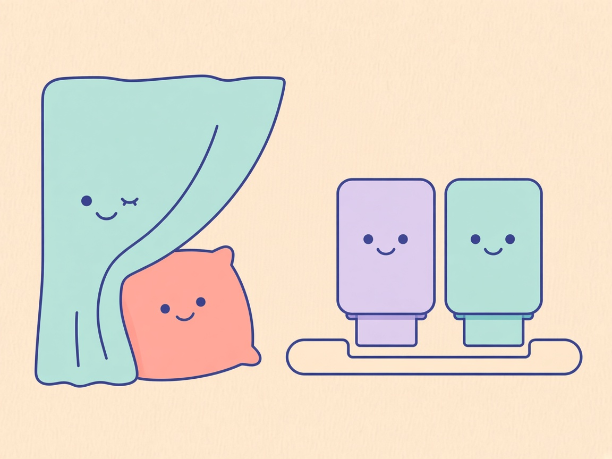

01 / Ausblenden

Deutsch
Noch verbunden
Ich bin noch da.
Versteckt, aber verbunden.
English
Still mounted
I am still here.
Hidden, still mounted.
Nur die richtigen / Only the right ones. Review preview for 0.13.0.md. Art is shared. Copy is selectable. German left, English right. Google Fonts (Source Serif 4) are for this static file only. The native Update window does not load this stylesheet.

Noch verbunden
Ich bin noch da.
Versteckt, aber verbunden.
Still mounted
I am still here.
Hidden, still mounted.

Neue Reihe
Schieb uns um.
Ziehen sortiert die Reihe.
A new order
Slide us along.
Drag them into new places.

Hinter dem Vorhang
Ich warte hinten.
Backups erst auf Wunsch.
Behind the curtain
I wait back here.
Backups wait until you ask.